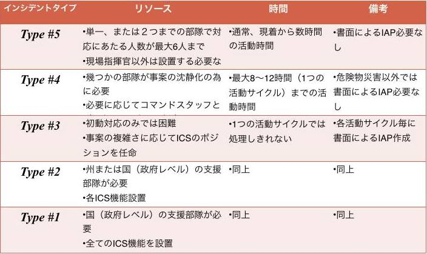

公式ルール ver2.2
【2月開催 日本会場（東京、石巻、名古屋）ローカルルール】
参加方法について
- 日本会場参加チームは 2/8午前中までには結成し、15時を目処にチャレンジプロジェクトとしてオンライン登録（ http://codeforresilience.org ）を済ませる。午前中はリクルーティングの時間も用意する予定。 チームメンバーのうち、ハッカソン会場に最低１名は参加する（最終日にプレゼンできるのも会場にいる人のみ）。
- ハッカソンは２月中世界各地で行われているので、各会場の許可がとれれば(各自お問い合わせください)、いずれの会場に参加しても良い。会場については、随時 http://codeforresilience.org でアップデートしているので参考にすること。ただし、バーチャル参加をみとめている会場とそうでない会場があるので、確認が必要。
チーム編成について
- チームの人数上限はなし。
- 国籍は問わない、多国籍メンバー構成のチームは評価される。
- 会場にいないメンバーが後方支援しても良い。
- メンターがチームに参加しても良い。（但し、審査員メンターのチーム参加は禁止）
- 運営スタッフがチームに参加しても良い。（但し、審査員対応スタッフは禁止）
- 成果発表時に、6名以下の場合は「◯◯◯チーム インシデントタイプは Type #5 です。リーダーは△△△さんです。」とチーム規模を説明する。7名以上の場合は「◯◯◯チーム インシデントタイプは Type #4 です。リーダーは△△△さんと☓☓☓さんです。」と前振りする。このタイプ分けは、米国で標準化されている現場指揮システム「インシデント・コマンド・システム(ICS)」の監督限界を採用したものであり、評価の「チームの取り組み」基準として判断。  参考資料：ICT 事案規模 (c) 熊丸 由布治
評価の６基準
- 審査員は以下の６つの基準で判定を行う。
1) 新規性, 創造性, イノベーション
Originality, creativity and innovation
2) 問題解決のユーザーニーズ適合性
Addressing of the problem statements and solving real user needs
3) UIの品質、使いやすさ
Quality of user interface
4) 技術的な運用の実現可能性
Technical and operational feasibility
5) 経済的・財政的 実現可能性
Economic and financial viability
6) チームの取り組み
Team effort
→ チームのインシデントタイプ情報から判断
成果発表会（ローカルルール）
- 2/9(日) 12:00 までに各チームごとA4片面カラーのPDFを以下の公開フォルダにアップすると、14時に審査員に配布する。（必須ではない） → http://goo.gl/0asnTe
- 2/9(日) 14:00 までに各チームごと以下のフォルダに Google Docs のプレゼンテーションとして認識できる発表用ファイルをアップする。ハングアウトでの中継に最適化することが目的。 → http://goo.gl/a5xXn6
- 2/9(日) 14:30 までに各チームごとに、登録状況を整理して以下のFacebookドキュメントに書き込む。
- 特にFacebookグループは必須として、公開/非公開/秘密は問わないが、必ず事務局(古橋、奥本、佐橋、矢崎)＋世銀・斎藤の５名を管理者として加える。 http://goo.gl/DvrY4e
ハッカソン後の流れ
- 審査員の審査により各会場ごと最優秀作品が決められる。最優秀作品は3〜5月開催のグローバルコンペへ進む。
- 最優秀作品からもれた作品もグローバルサイトへ掲載され、アーカイブされる。敗者復活もある。（ http://codeforresilience.org ）
- ローカルアワード・グローバルアワード入賞作品には世界銀行より入賞認定マークを付与予定。（現在調整中）
【3月〜5月開催 Global Online Challenge グローバルルール】
Global Online Challenge 詳細ルール（原文）
参加方法について
- 2月中に各国で開催されたハッカソンの各会場上位数チームが参加できる。
- 日本は、東京、石巻、名古屋の各会場上位数チーム及び特別賞受賞チームに参加資格がある。（連携コミュニティである他ハッカソンでのRace for Resilience賞受賞チームも同様）
- ほかの日本チームも、他国で開催されたハッカソンで勝ち抜いた場合（その場合、日本で発表したプロダクトと同一は不可）、参加可能。
- 上記受賞作品以外も、敗者復活としてグローバル審査対象になる可能性がある。（３月中に世界銀行が選考）
- グローバル審査はオンライン上で行われる。
Global Online Challengeの流れ
- ３月末日までに、グローバル審査対象プロジェクトが選抜される。http://codeforresilience.org
- ５月11日までに、作品をブラッシュアップし、プレゼン映像を提出する（必須）。
- ５月12日〜5月下旬（People's Choice Awardは 5月12-16日 Twitter投票）にオンライン上での審査が行われ、世界各国のハッカソン会場から勝ち上がったプロダクトのうち、上位入賞チーム代表1-２名がロンドンのUnderstanding Risk国際会議で発表するため招待される。
【応募作品について】
作品ルールについて
- 防災減災に関連するものであれば、広く応募可能。
- 応募できる作品は、アプリ、ハードウェア、仕組みづくり、データ整理、ドキュメント整備など。
- 2/8現在で、まだローンチ(実装)していないプロダクトやアイディアであれば、既存プロダクトの改良や既存アイディアの改善でも参加OK。 例) safecast チームが、ハッカソン中に新機能を追加して発表しても良い
- 途上国で機能する、グローバルに利用できる作品が評価される。
- 発災時のフェーズよりも、事前防災的視点の作品が評価される。
作品のライセンスルールについて
- 本ハッカソンに応募できる作品のライセンスについては、以下の条件をクリアしていないと参加できない。尚、イベント向けにスクラッチ開発した部分に対するライセンスであるため、例えば商用ソフトウェアのマクロなどであっても、マクロスクリプト部分に限定される。
- 参加者は、各チームが議論・作成・発表したアイデア、アプリケーション等に関する一切の知的財産権等（商標・デザイン・ノウハウ・コンセプト等を含みます）は、第三者が所有する技術等に関する権利を除き、各チームに帰属するとともに、本イベントの内容が主催者の今後の支援活動・広報等において直接・間接的に使用される可能性があることに同意するものとする。本ハッカソンで応募された作品は、各チームごとに適切なオープンライセンスを明示する。とくに明示がない場合は原則 CC0 ライセンスとする。 http://sciencecommons.jp/cc0/about
- 参加者は、本ハッカソンで開発、発表したアプリケーションのソースコードはhttp://www.codeforresilience.org で公開され、今後、オープンソースとして第三者に使用、改変されることに同意するものとする。オープンソースライセンスの選択は各チームごとに判断し、特に明示がない場合は原則 WTFPL ライセンスとする。但し、WTFPLライセンスは上品ではない言葉も含まれるため、本ハッカソンで推奨するわけではない。あくまで、ライセンスを明示しないと WTFPLライセンスになってしまうという意味であり、可能な限り各チームごとに作品のライセンスについてのディスカッションを行い、明記することを推奨とする。 http://ja.wikipedia.org/wiki/WTFPL